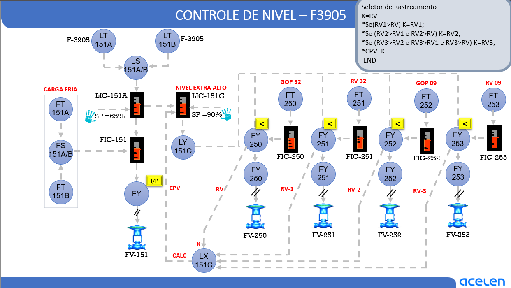

F-3905
Controle de Nível Concept
Estudo integral da malha de nível: transmissores LT-151A/B, seleção LS, cascata LIC-151A → FIC-151, override de nível alto LIC-151C, seletores de mínimo FY-250 a FY-253 e rastreamento máximo LX-151C.
Desenho original da malha com pontos interativos
A imagem reproduz o desenho fornecido para a análise. Acione as lâmpadas sobre o diagrama para abrir o painel técnico de cada conjunto; somente um painel fica aberto por vez. O conteúdo integral também está disponível, sem cortes, nos capítulos seguintes.

Leitura responsável do desenho: o fluxo geral da estratégia pode ser identificado pela figura, mas o detalhamento interno dos blocos LS, LIC, FY e LY não aparece integralmente. Onde houver alternativas de implementação, o Concept as explicita em vez de atribuir uma configuração não comprovada à unidade.
Visão completa: controle normal, override e rastreamento
A malha apresentada é uma estratégia de controle de nível em cascata, associada a um sistema de controle seletivo por override (sobreposição de controle). O objetivo é manter o inventário de líquido do F-3905 dentro de uma faixa operacional adequada, utilizando inicialmente a vazão de carga fria e, quando necessário, atuando sobre quatro outras correntes de alimentação.
O aspecto mais importante é a existência de dois controladores de nível com funções diferentes, além de seletores de mínimo, um seletor de rastreamento de máximo e uma realimentação calculada.
Essa estratégia estabelece duas prioridades: prioridade operacional — o LIC-151A procura manter o nível em 65%, ajustando a carga fria; e prioridade protetiva — o LIC-151C procura evitar a elevação excessiva do nível, restringindo outras cargas quando a ação normal não é suficiente.
LT-151A, LT-151B e LS-151A/B — Seleção de nível
O F-3905 possui dois transmissores representados no desenho, LT-151A e LT-151B, que alimentam uma etapa de seleção de medição identificada como LS-151A/B. A presença dos dois transmissores permite verificar divergências entre medições e disponibilizar alternativas para a estratégia de controle.
| Instrumento | Função |
|---|---|
| LT-151A | Medição de nível do F-3905. |
| LT-151B | Segunda medição de nível. |
| LS-151A/B | Seleção ou tratamento dos sinais para os controladores. |
O desenho não informa qual critério é utilizado pelo LS: seleção manual de A/B, maior sinal, menor sinal ou seleção condicionada à qualidade do instrumento. Isso precisa ser confirmado na configuração do SDCD.
Por que essa seleção é importante?
Considere uma condição hipotética: LT-151A = 67% e LT-151B = 88%. Se o controle utilizar um sinal incorretamente baixo, poderá interpretar que existe capacidade para receber mais líquido quando, na realidade, o F-3905 está próximo do nível extra-alto.
Como os dois controladores de nível dependem da informação selecionada, um problema nessa etapa pode comprometer tanto o controle normal quanto a proteção por override. Operacionalmente, é necessário observar a divergência, a qualidade do sinal, as tendências históricas e a coerência com o balanço de massa.
LIC-151A (SP 65%) → FIC-151 → FV-151
O LIC-151A é o controlador principal de nível. Sua variável controlada é o nível do F-3905; sua variável manipulada, indiretamente, é a vazão de carga fria através da FV-151. Essa estratégia é conhecida como controle em cascata nível–vazão.
Sequência completa de funcionamento
- O LT mede o nível, e o LS disponibiliza o sinal selecionado.
- O LIC-151A compara esse nível com o SP de 65%.
- A saída do LIC-151A estabelece a referência de vazão para o FIC-151.
- O FIC-151 recebe a vazão medida através dos FT-151A/151B, com seleção pelo LS correspondente.
- O FIC-151 ajusta a FV-151 por intermédio do FY e do conversor I/P, buscando manter a vazão determinada pelo controlador de nível.
Considerando a FV-151 como válvula de entrada da carga fria, o comportamento esperado é o apresentado a seguir.
| Situação | Resposta esperada |
|---|---|
| Nível abaixo de 65% | LIC-151A solicita maior vazão de carga fria. |
| Nível próximo de 65% | LIC-151A ajusta a vazão para equilibrar o inventário. |
| Nível acima de 65% | LIC-151A solicita menor vazão de carga fria. |
Essas relações consideram a ação de controle corretamente configurada para uma válvula de alimentação. O sentido do sinal elétrico, o posicionamento da válvula e a condição de falha necessitam de confirmação documental.
Por que utilizar dois controladores em cascata?
Imagine que o LIC-151A comandasse diretamente a FV-151, sem o FIC-151. Se a pressão de alimentação da carga fria variasse, a vazão também poderia variar, mesmo com a abertura da válvula aparentemente constante.
Com a cascata, o FIC-151 corrige rapidamente perturbações de vazão, como alterações de pressão diferencial na válvula; o LIC-151A corrige mais lentamente o inventário de líquido do F-3905, ajustando o SP de vazão conforme necessário. Assim, o controle de nível não precisa reagir diretamente a cada pequena perturbação hidráulica da linha de carga fria.
Limitação de autoridade do controle normal
Se o nível continuar subindo mesmo após a FV-151 atingir sua abertura mínima operacional, o LIC-151A não terá mais autoridade suficiente sobre essa entrada. É nessa situação que a segunda estratégia, baseada no LIC-151C e nos quatro controles de carga, torna-se fundamental.
LIC-151C — Controle por nível extra-alto (SP 90%)
O LIC-151C é o segundo controlador de nível e possui função diferente do LIC-151A. Ele integra uma estratégia de override para restringir as correntes de alimentação do F-3905 quando existe tendência de acúmulo excessivo de líquido.
Pelo desenho, o LIC-151C recebe uma referência relacionada ao nível utilizado pelo LIC-151A e também uma realimentação calculada pelo LX-151C. O ponto exato de conexão desses sinais dentro do bloco LIC precisa ser conferido no SDCD.
Por que são utilizados dois setpoints diferentes?
O valor de 65% estabelece a condição desejada para a operação normal. Já o valor de 90% corresponde à referência do controlador de restrição de carga. A diferença entre os dois setpoints proporciona uma margem operacional na qual o controle normal pode absorver perturbações sem precisar interferir nas demais correntes.
Suponha que a vazão de retirada do F-3905 diminua. Inicialmente, o nível sobe e o LIC-151A reduz a carga fria. Se essa redução for suficiente, o nível retorna à condição desejada e os FIC-250 a FIC-253 continuam regulando suas vazões normalmente.
Entretanto, se o nível continuar subindo porque a soma das outras cargas ainda supera a capacidade de retirada, o LIC-151C passa a impor uma restrição aos sinais de comando dessas correntes.
O SP do LIC-151C não representa, por si só, evidência de proteção independente de nível alto-alto. Verificar separadamente os alarmes, intertravamentos e eventuais ações de emergência da unidade.
FIC-250 a FIC-253 e os seletores de menor sinal
No lado direito da figura existem quatro malhas individuais. Cada FIC recebe a vazão medida, compara-a com seu SP individual e produz um comando de saída. Entretanto, o sinal calculado por cada FIC não chega diretamente à válvula sem passar pela lógica de seleção.
| Corrente | Medição | Controlador | Seletor MIN | Válvula |
|---|---|---|---|---|
| GOP 32 | FT-250 | FIC-250 | FY-250 | FV-250 |
| RV 32 | FT-251 | FIC-251 | FY-251 | FV-251 |
| GOP 09 | FT-252 | FIC-252 | FY-252 | FV-252 |
| RV 09 | FT-253 | FIC-253 | FY-253 | FV-253 |
Na figura, cada FIC envia seu sinal a um bloco FY identificado com o símbolo <, que representa um seletor de menor valor. O LY-151C fornece o limite comum com o qual cada comando normal será comparado.
| Seletor | Saída efetiva, em representação simplificada |
|---|---|
| FY-250 | MIN(saída FIC-250, limite LY-151C) |
| FY-251 | MIN(saída FIC-251, limite LY-151C) |
| FY-252 | MIN(saída FIC-252, limite LY-151C) |
| FY-253 | MIN(saída FIC-253, limite LY-151C) |
Os FY inferiores, desenhados próximos às válvulas, representam a etapa de transmissão ou condicionamento do sinal ao elemento final. A implementação física precisa ser conferida no detalhamento de instrumentação.
Consequências da seleção de mínimo
Quando o controlador de nível alto não exige restrição, o seletor permite que cada FIC determine o comando de sua válvula. Quando o LIC-151C solicita um limite inferior à saída de determinado FIC, esse limite passa a prevalecer.
Dessa maneira, o FIC pode continuar solicitando uma abertura maior para manter sua vazão, mas o comando efetivo à válvula permanece limitado pelo nível do F-3905. Isso significa que o controle de vazão perde temporariamente a prioridade para o controle de nível alto.
LX-151C — Por que o sistema seleciona o MAX?
Na parte inferior do desenho existe um bloco identificado como LX-151C, associado à lógica de rastreamento descrita na própria figura:
Seletor de Rastreamento K = RV * Se (RV1 > RV), K = RV1; * Se (RV2 > RV1 e RV2 > RV), K = RV2; * Se (RV3 > RV2 e RV3 > RV1 e RV3 > RV), K = RV3; * CPV = K END
Essa é a transcrição conceitual da rotina exibida no desenho. Ela equivale à seleção do maior valor entre quatro entradas, como indicado abaixo:
O bloco recebe quatro valores provenientes dos seletores FY-250, FY-251, FY-252 e FY-253. Na nomenclatura do cálculo, RV e RV1–RV3 representam as entradas utilizadas no cálculo, enquanto CPV é a saída calculada. Não confundir a variável RV do bloco com a sigla RV utilizada nas correntes de resíduo de vácuo.
Por que os quatro FY escolhem o MENOR, mas o LX-151C escolhe o MAIOR?
Os quatro FY utilizam o menor sinal porque precisam respeitar uma restrição máxima de comando imposta pelo controlador de nível. Por outro lado, o LX-151C utiliza o maior sinal para acompanhar a condição mais elevada entre as saídas selecionadas.
O resultado, denominado CPV, retorna ao LIC-151C. Essa conexão é compatível com uma estratégia de tracking, usada para coordenar a saída do controlador de nível alto com os comandos que efetivamente passaram pelos seletores.
Em aplicações de override, esse tipo de realimentação é importante para evitar o acúmulo indevido da ação integral (integral windup) e favorecer transferências suaves de autoridade entre controladores.
Por que o tracking é operacionalmente importante?
Imagine que o LIC-151C estivesse sem qualquer rastreamento e produzindo uma saída de 100%, enquanto os quatro FICs trabalhassem com saídas muito menores. Quando fosse necessário começar a restringir as cargas, o LIC-151C teria de reduzir sua saída até alcançar os comandos normais das válvulas antes de produzir qualquer efeito.
O rastreamento do maior valor pode evitar esse afastamento excessivo entre o controlador protetivo e as válvulas, permitindo uma transferência de controle mais rápida e suave. Essa é a finalidade técnica compatível com a arquitetura mostrada, condicionada à confirmação do funcionamento interno do controlador.
Simulação completa dos seletores MIN e do LX-151C MAX
Este simulador reproduz a lógica matemática identificada no desenho. Modifique o limite comum do LY-151C e as quatro saídas normais de FIC para observar quais correntes ficam sob override e qual CPV retorna pelo seletor de rastreamento.
Os valores iniciais — FIC-250 = 35%, FIC-251 = 55%, FIC-252 = 75% e FIC-253 = 65% — são exemplos exclusivamente didáticos, não medições da unidade.
Controle comum LY-151C
Comandos normais dos quatro controladores de vazão: ajuste os valores individualmente para comparar diferentes situações.
Resultado matemático em tempo real
| Corrente | Saída FIC | Saída FY = MIN | Condição |
|---|
Barras cinzas: comando pedido pelo FIC. Barras azuis: comando efetivamente selecionado pelo FY. Não representam posições reais nem vazões medidas.
Raciocínio do LX-151C nesta condição
CPV = max(35, 55, 75, 65) = 75%
Exemplo integral: restrição de 60%
Suponha que os comandos normais sejam 35%, 55%, 75% e 65%. Quando o LY-151C solicita limite de 60%, o FY-250 mantém 35%, o FY-251 mantém 55%, o FY-252 reduz 75% para 60% e o FY-253 reduz 65% para 60%. As saídas efetivas seriam, portanto, 35%, 55%, 60% e 60%; a CPV do LX-151C seria 60%.
Observe que não existe uma ordem fixa de corte entre GOP 32, RV 32, GOP 09 e RV 09 na lógica apresentada. A ordem depende da comparação entre o limite comum e os sinais individuais dos FICs. A CPV seleciona o maior valor entre as quatro saídas efetivas, não a maior vazão de processo.
Laboratório V3 — diagnostique, corrija e estabilize o F-3905
Agora é possível atuar nas variáveis do processo e acompanhar, instante a instante, a reação da cascata LIC-151A → FIC-151 → FV-151, a restrição comandada pelo LIC-151C → LY-151C, os quatro seletores FY (MIN) e o retorno LX-151C (MAX). As tendências, o rastreamento dos sinais, o registro de ocorrências e os desafios permitem verificar se a correção realmente estabilizou o inventário.
Este laboratório acrescenta um modelo dinâmico didático de balanço de massa, resposta de válvulas, compensação de vazão e controle por nível. As grandezas de vazão são unidades relativas por minuto simulado (u.r./min); ganhos, tempos, resposta hidráulica e falhas instrumentais são parametrizações didáticas, não configurações extraídas do SDCD. O comportamento de MIN e MAX, os instrumentos e os SPs de 65%/90% seguem o desenho apresentado.
Escolha uma ocorrência, acompanhe a cadeia de sinais, movimente retirada/pressão/SPs, compare medições e comandos reais no modelo e observe a tendência por vários minutos simulados. Um instante em 65% não significa estabilidade: o laboratório só confirma o desafio após três minutos continuamente dentro de critérios definidos.
F-3905 · malhas em resposta dinâmica
A imagem animada mostra a direção e a intensidade relativa dos escoamentos; não é uma representação fiel de tubulações, geometrias ou capacidades reais.
Variáveis de processo • perturbações
Instrumentação • diagnóstico de sinais LT / FT / LS
O desenho não especifica o critério real do LS-151A/B. Neste exercício, você escolhe manualmente a medição A ou B para observar como um erro propagaria-se aos dois LICs. O nível real simulado é mantido internamente para comparação didática.
Vazões solicitadas • controles normais
Altere os SPs dos quatro FICs. Cada FIC procura recuperar sua vazão, salvo quando o FY correspondente impõe o limite de nível alto.
Mantenha o nível próximo de 65% e a tendência próxima de zero. Em condições de nível extra-alto, observe a tomada de autoridade pelo override e recupere o balanço de massa.
Tendências • acompanhe a correção temporal
Registro automático de eventos CIC
- Preparando registro de eventos...
Interpretação da estratégia de seleção
Inspeção dos sinais da malha em tempo real
| Corrente | SP FIC | FT (PV) | FIC (MV) | FY = MIN | Válvula efetiva | Autoridade |
|---|
LIC-151A → FIC-151
O controlador compara o nível com 65% e modifica o SP do FIC-151 para equilibrar as entradas com a retirada.
LIC-151C → LY → FY → LX
O seletor MIN respeita o menor comando entre FIC e LY. O LX acompanha o maior dos quatro FY, compondo a CPV.
Equação integrada: dN/dt = (ΣQentrada − Qretirada)/Cefetiva. Aqui Cefetiva é um parâmetro normalizado de capacidade, com válvulas de primeira ordem e controladores simplificados. No refinamento V3, o efeito de pressão disponível sobre vazão é proporcional à raiz quadrada da pressão relativa, como analogia de ΔP. Os controles manual e de instrumentos permitem comparar a resposta com e sem cascata/override, e identificar indicação falsa; não se aplica a procedimentos de manobra da unidade real.
Balanço de massa e comportamento hidráulico
A operação do F-3905 pode ser compreendida por um balanço de massa. Para uma aproximação com líquido de densidade praticamente constante, sem incluir correções de geometria e compressibilidade, temos:
Em que V representa o volume de líquido acumulado no F-3905. Quando a vazão total de entrada supera a de saída, o inventário aumenta e o nível tende a subir. Quando a retirada supera a admissão, o nível tende a cair.
Como o balanço de massa explica os dois controladores?
O LIC-151A possui autoridade principalmente sobre uma parcela do somatório das entradas: a carga fria. Já o LIC-151C pode restringir quatro outras parcelas desse somatório.
Portanto, o controle normal possui uma capacidade de correção mais limitada, enquanto o controle extra-alto consegue atuar sobre uma parcela maior da alimentação total.
Relação entre comando, pressão diferencial e vazão
A vazão através de uma válvula depende de sua abertura, da capacidade de escoamento e da pressão diferencial disponível. Simplificadamente, para líquidos incompressíveis em condições adequadas de escoamento, pode-se representar a relação por:
Essa expressão evidencia que uma mesma posição da válvula não garante uma mesma vazão se as condições hidráulicas variarem. É necessário observar a pressão diferencial, a densidade e a característica instalada da válvula.
Assim, reduzir o comando de uma válvula não produz necessariamente uma redução proporcional de vazão. O FIC mede essa resposta e procura compensá-la; contudo, enquanto o override estiver ativo, sua capacidade de compensação fica limitada pelo seletor de menor sinal.
Como interpretar os sinais durante a operação no CIC
A análise de uma ocorrência deve confrontar o nível do F-3905, os comandos dos LICs, as saídas dos FICs, as saídas dos FY, as vazões medidas e as condições de retirada do equipamento. Uma única indicação isolada não caracteriza o estado de toda a estratégia.
| Condição observada no CIC | Interpretação técnica |
|---|---|
| Nível próximo de 65%, estável | Controle normal de inventário. O LIC-151A ajusta a carga fria. |
| Nível subindo acima de 65%, FV-151 reduzindo | A malha normal está tentando reduzir a entrada de líquido. |
| Nível próximo de 90%, saídas FY inferiores às saídas dos FICs | Indício de override restringindo as respectivas cargas. |
| FIC com PV abaixo do SP e saída solicitando maior abertura, sem resposta equivalente da válvula | Pode existir restrição imposta pelo seletor de mínimo; verificar também outros limites ou falhas. |
| Nível permanece alto mesmo com cargas restringidas | A restrição pode não ser suficiente. Investigar balanço de massa, retirada, limitações hidráulicas e possíveis falhas de medição ou atuação. |
| LT-151A e LT-151B divergentes | A confiabilidade do sinal selecionado e das duas estratégias de nível deve ser avaliada. |
| Nível cai e as restrições são liberadas | O controlador de nível alto pode estar devolvendo gradualmente a autoridade aos FICs. |
Pontos de atenção no comportamento dinâmico
Durante a restrição, um FIC pode permanecer com erro entre PV e SP porque a válvula não está obedecendo integralmente à sua saída. Por isso, as malhas de vazão também precisam possuir uma estratégia adequada contra saturação integral e transições bruscas quando o override for liberado.
A mera presença do seletor no desenho não comprova que todos os mecanismos de anti-windup estejam configurados. Também não é possível concluir, exclusivamente pela figura, a velocidade de fechamento, as prioridades de alarme, a condição de falha das válvulas ou a ação de intertravamentos associados.
📈 Nível subindo, mesmo com carga fria reduzida
Verificar se a retirada diminuiu, se as demais vazões de entrada continuam elevadas e se o LIC-151A alcançou seu limite de ação.
🔒 FY menor que a saída do FIC
É compatível com limitação por override. Comparar comando do LY-151C, saída dos FY, sinais dos FICs e posição real de válvulas.
⚠️ Diferentes níveis entre os LT
Avaliar o critério de seleção e a confiabilidade dos instrumentos, sem presumir que o seletor usa sempre o maior ou o menor valor.
↗ Retorno das condições normais
Observar a liberação progressiva da restrição, os erros acumulados nos FICs e potenciais transientes de admissão.
Finalidade técnica integral e pontos de validação no SDCD
A estratégia procura preservar simultaneamente três condições operacionais:
1. Inventário estável
O LIC-151A utiliza a FV-151 para manter o nível próximo de 65%, sem perturbar desnecessariamente as demais cargas.
2. Restrição de alimentação
O LIC-151C tem referência de 90% e, por meio do LY-151C e dos quatro FY de mínimo, pode assumir prioridade sobre os FIC-250 a FIC-253.
3. Coordenação de transferência
O LX-151C identifica o maior valor entre as saídas selecionadas e o retorna como CPV ao LIC-151C, compondo a estratégia de rastreamento.
A principal característica dessa malha não é simplesmente possuir dois controladores de nível, mas fazer com que o nível do F-3905 possa limitar dinamicamente quatro vazões de alimentação, preservando o controle individual sempre que a restrição não for necessária.
Para validar integralmente essa interpretação na U-39, os pontos decisivos a conferir na configuração do SDCD são:
- LS-151A/B: critério de seleção, prioridade entre instrumentos, qualidade do sinal e comportamento em falha.
- LIC-151A: modo, ação do controlador, saída para o FIC-151, limites de vazão, sintonia e rastreamento.
- FIC-151 e FV-151: referência proveniente do LIC, seleção FT-151A/B, posicionamento, característica de atuação e condição de falha.
- LIC-151C: ação, modo, limites, sintonia, faixa ativa e relação entre PV, SP, LY e CPV.
- LY-151C: forma de transmissão/condicionamento do limite comum para os quatro seletores.
- FY-250/251/252/253: confirmação do seletor MIN, fontes de sinais e lógica de rastreamento dos FICs individuais.
- LX-151C: vinculação das quatro entradas de cálculo e destino exato de CPV dentro do LIC-151C.
- FV-250 a FV-253: sentido de ação, tipo de atuador, conversões de sinal, posição real e condição de falha.
- Proteções independentes: verificar alarmes, permissivos e intertravamentos de nível extra-alto associados ao F-3905.
- Resposta dinâmica: confirmar mecanismos de anti-windup, tratamento de perda de medição, limites de rampa e liberação do override.
Laboratório Concept — desafios de interpretação CIC
Questões com alternativas próximas e ordem embaralhada em cada reinício. Os desafios verificam a compreensão da cascata, da lógica MIN/MAX, do rastreamento e das limitações de evidência, sem substituir os capítulos técnicos integrais.